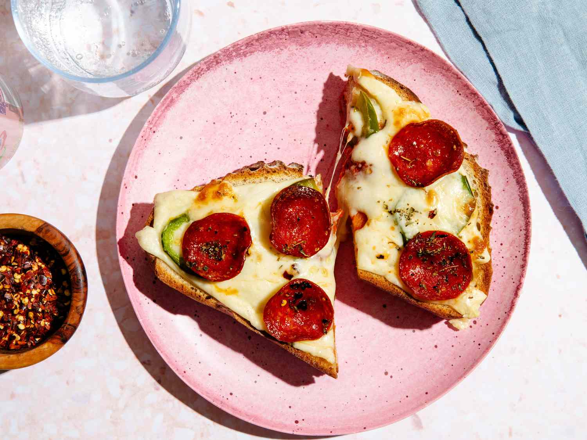

Pizza Lava Toast

Description
A simple toast covered with melted cheese and toppings
Ingredients
- 2 teaspoons of butter
- 2 slices of sourdough bread
- 1 1/2 ounces of sliced mozzarella cheese, divided
- 1/2 an ounce of sliced pepper jack cheese
- 5 slices of pickled jalapeno
- 1 tablespoon of pizza sauce
- 1/4 teaspoon of Italian seasoning, divided
- Crushed red pepper, to taste
- Ground Black Pepper, to taste
Steps
- Preheat oven to 235 Fahrenheit or 135 Degrees Celsius.
- Line a sheet pan with parchment paper.
- Spread butter on both sides of each slice of bread and place on the prepared pan.
- Bake, flipping once halfway through, until bread is lightly browned on both sides, about 8 minutes.
- Cover the perimeter of one bread slice with half of the mozzarella cheese, leaving the middle part of the bread empty.
- Top with other slice of bread.
- Use the back of a spoon to make an indentation in the middle of the bread slices, pushing down firmly to reach the bottom slice.
- Add the sauce to the indentation, and sprinkle half the Italian seasoning over the top.
- Cover with remaining 1/2 ounce mozzarella cheese and pepper jack, followed by jalapeno and pepperoni.
- Garnish with remaining Italian seasoning, crushed red pepper and black pepper.
- Bake until the cheese is melted and golden-brown, about 5 minutes. Slice in half and serve.
Return back to Homepage